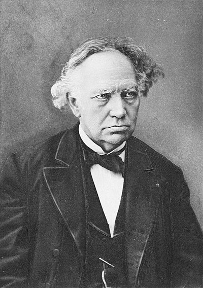

1822–1901
French
Algebra, number theory, analysis
Charles Hermite was born in Dieuze, Lorraine, with a deformity of his right leg that left him walking with a cane throughout his life. He entered the Ecole Polytechnique in 1842 but was nearly expelled for poor performance in non-mathematical subjects. Despite this inauspicious start, he became one of the most influential French mathematicians of the 19th century.
Hermite's work on quadratic forms and the theory of algebraic invariants led him to study matrices with the property $A = \bar{A}^T$ — now called Hermitian matrices. He showed in 1855 that such matrices always have real eigenvalues and can be diagonalised by a unitary change of basis, extending the spectral theorem from real symmetric to complex Hermitian matrices. This result is foundational in quantum mechanics, where observables are represented by Hermitian operators.
His 1873 proof that $e$ is transcendental was a landmark in number theory, settling a question that had been open since Euler. It also provided the template for Lindemann's subsequent proof (1882) that $\pi$ is transcendental, thereby proving the impossibility of squaring the circle. Hermite held the chair of analysis at the Sorbonne and trained a generation of French mathematicians including Poincare, Picard, and Borel. He was famously resistant to geometry — "I turn away with fear and horror from this lamentable plague of continuous functions which do not have derivatives" — preferring algebraic and analytic methods.
| Phase | Page | Referenced for |
|---|---|---|
| Phase 6 | The Spectral Theorem | Extended the spectral theorem to complex Hermitian matrices |
| Phase 13 | The Spectral Theorem | Hermitian matrices (1855): real eigenvalues, unitary diagonalisation |